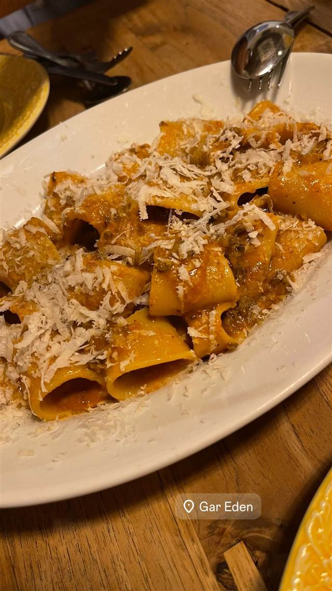
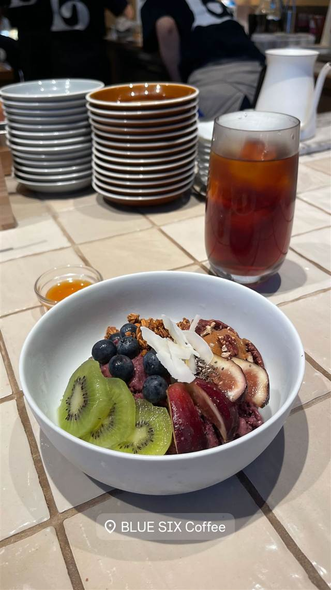
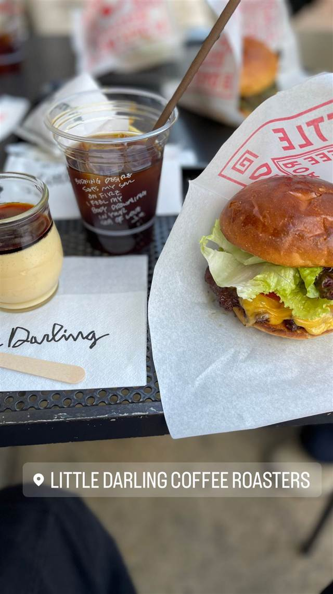
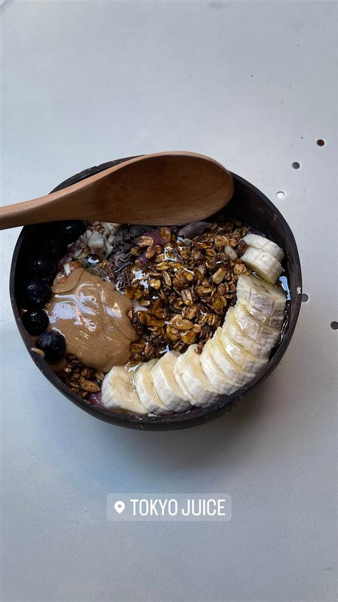
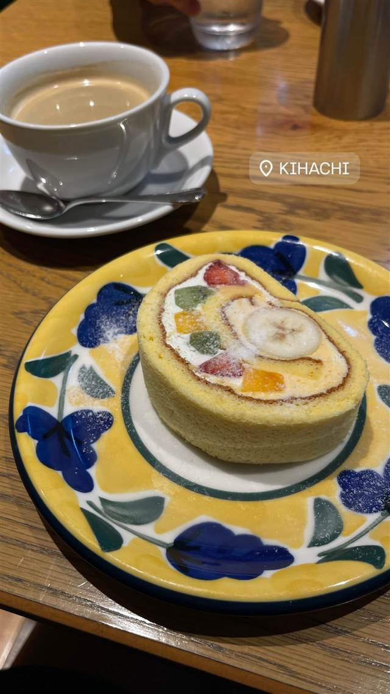
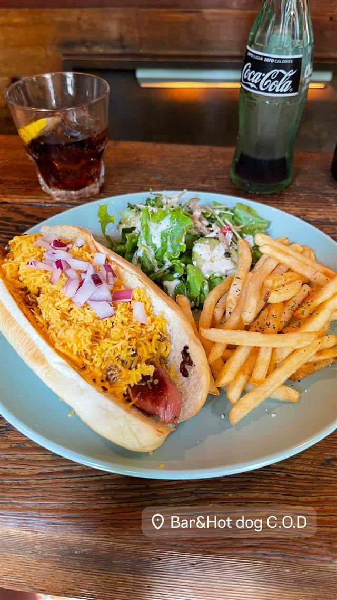
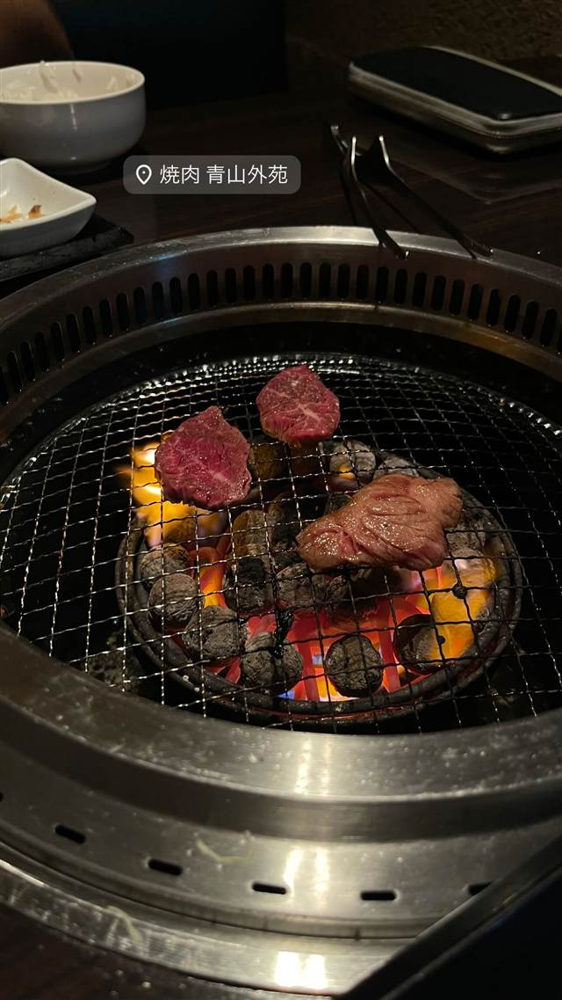

BY TOWN
外苑前8店
-

パスタ 外苑前 Gar Eden（ガルエデン） イタリア仕込みの女性シェフとビール好きの店長が営む一軒家 夜 ¥6,000～¥7,999 -

コーヒー 国立競技場 BLUE SIX COFFEE 世界の農園を視察し選んだカビ毒・残留農薬フリー豆を自家焙煎 昼 ¥1,000～¥1,999 夜 ¥1,000～¥1,999 -

コーヒー 青山一丁目・乃木坂 Little Darling Coffee Roasters 世界大会入賞のバリスタが淹れる元物流倉庫のロースターカフェ -

アイス・ジェラート 外苑前 Tokyo Juice 表参道店 自己免疫疾患の改善体験から生まれた無添加フレッシュジュース 昼 ¥1,000～¥1,999 夜 ¥1,000～¥1,999 -
 パンケーキ・フレンチトースト 外苑前
カフェ香咲（Caf'e Casa）
元はまかないだった銅板焼きホットケーキが名物
昼 ¥1,000～¥1,999 夜 ¥2,000～¥2,999
パンケーキ・フレンチトースト 外苑前
カフェ香咲（Caf'e Casa）
元はまかないだった銅板焼きホットケーキが名物
昼 ¥1,000～¥1,999 夜 ¥2,000～¥2,999
-

ケーキ・パフェ 外苑前 キハチ 青山本店（KIHACHI） 客の声から生まれた看板のフルーツロールケーキ -

ハンバーガー 外苑前 Hotdogs&Burgers BAR C.O.D 国産牛100%のフランクフルトを使ったチリドッグが名物 昼 ¥1,000～¥1,999 夜 ¥1,000～¥1,999 -

焼肉 外苑前 焼肉 青山外苑 料理長が目利きするA5黒毛和牛、握り寿司など生食でも楽しめる 昼 ¥1,000～¥1,999 夜 ¥8,000～¥9,999